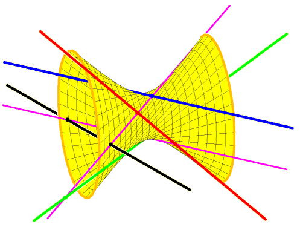

A problem in the Schubert Calculus
A problem in the Schubert Calculus
|
There are 2 lines in space meeting
four given lines (Here in blue,
green, red, and
black). Indeed, the blue, green, and red lines are members of one ruling of a unique hyperboloid of one sheet. Members of the other ruling are the lines meeting these three. The fourth black line meets the hyperboloid in two points, and through each of these points is a line meeting our four given lines. |
 | |
| The Galois Group of this problem is the group of permutations of the solutions obtained by moving the four lines. | ||